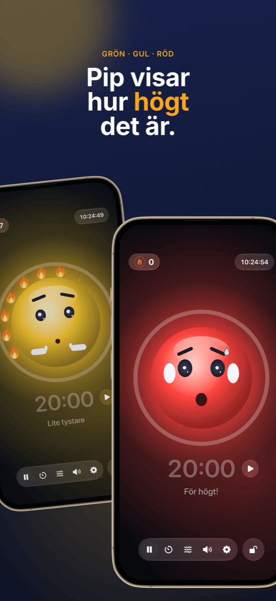

Ledarskap i klassrummet: placering, grupper och ljudnivå under kontroll
Ett gott ledarskap i klassrummet märks knappt, och det är just poängen: lektionen flyter, övergångarna fungerar och tiden går till lärande i stället för tillsägelser. Tre frågor återkommer nästan varje lektion: Vem sitter var? Vem arbetar med vem? Och hur högt får det vara just nu? Den här guiden visar ett arbetssätt som besvarar alla tre innan de blir ett problem.
Vad ledarskap i klassrummet egentligen handlar om
Ledarskap i klassrummet är mer än disciplin. Redan på 1970-talet visade den amerikanska psykologen Jacob Kounin att framgångsrika lärare skiljer sig mindre i hur de reagerar på störningar än i hur väl de förebygger dem. Till hans kännetecken hör:
- Överblick: klassen känner att du har hela rummet i blicken.
- Smidighet och tempo: övergångar mellan faser kostar inga minuter, och lektionen tappar inte farten.
- Att aktivera gruppen: alla förblir delaktiga, inte bara den som har ordet.
Mycket av detta är förhållningssätt och erfarenhet. Men en del är helt enkelt organisation, och den går att förbereda. Det är där följande arbetssätt kommer in.
Steg 1 · En gång i förvägSkapa klasslistan en gång, använd den överallt
Den största tidstjuven är dubbelarbete. Exportera klasslistan en gång som CSV från Excel, Numbers eller Google Kalkylark. Både Platzwahl och Team Zufall importerar filen direkt, och hela klassen är inlagd på några sekunder. Båda apparna sparar namnen bara lokalt på enheten, utan konto och utan moln. Med elevdata är det ingen detalj utan en förutsättning.
Steg 2 · GrundenPlaceringen: förebygg störningar innan de uppstår
Placeringen är det mest verkningsfulla verktyget för ledarskap i klassrummet, eftersom den verkar varje minut utan att du behöver säga något. Vem som sitter bredvid vem avgör prat, distraktion och koncentration. Det här har visat sig fungera:
- Separera oroliga elever, inte bara bredvid varandra utan också framför och bakom.
- Använd närhet: den som behöver stöd eller lätt tappar fokus sitter i ditt direkta synfält.
- Fördela lugna ankare mellan livligare elever.
- Byt regelbundet, till exempel efter loven eller varje månad, så att inga fasta orohörn uppstår.
I Platzwahl anger du de här reglerna per elev (störningsrisk, plats längst fram, önskade grannar, separationer) och låter placeringen räknas ut automatiskt. Ett poängvärde visar hur väl alla regler uppfylls. Den färdiga planen hamnar på katedern som PDF.
 Steg 3 · Samarbetsfaser
Steg 3 · Samarbetsfaser
Rättvisa grupper utan diskussion
”Får vi välja själva?” är frågan som gör att många grupparbeten är förlorade innan de ens börjat. Fritt val tar tid, befäster gäng och lämnar alltid samma elever kvar. Riktad indelning är rättvis men mödosam och knappast värd besväret för tio minuters pararbete.
För de många korta faserna är slumpen den bästa lösningen: den går snabbt, ingen känner sig gynnad och klassen lär sig att arbeta med alla. Det viktiga är att lottningen är synlig. När klassen ser namnen blandas på projektorn finns det inget att diskutera.
I Team Zufall väljer du antal lag, väljer bort frånvarande med ett tryck och lottar. Lagen kan visas stort på väggen eller exporteras som PDF. För längre projekt där vissa kombinationer måste undvikas är riktad indelning fortfarande det bättre valet.
 Steg 4 · Arbetsfas
Steg 4 · Arbetsfas
Gör ljudnivån synlig i stället för att hyssja hela tiden
Grupparbete låter, och det är helt okej. Det blir ett problem när ingen längre vet hur högt som är för högt och du ägnar lektionen åt att säga ”Sch!”. Tillsägelser nöts snabbt ut och avbryter just dem som arbetar koncentrerat.
Tre saker fungerar bättre:
- Kom överens om ljudnivån: bestäm tillsammans med klassen vad som gäller i vilken fas. Viska vid enskilt arbete, parröst vid grupparbete.
- Visa ljudnivån: ett ljudtrafikljus på projektorn ger klassen den återkoppling du annars skulle behöva ge högt.
- Belöna lugn i stället för att straffa oväsen: om trafikljuset bara slår om till rött och tar något ifrån klassen blir det snabbt ett påtryckningsmedel, och enskilda högljudda elever blir klassens syndabock. Ett gemensamt mål som klassen kan nå fungerar bättre.
Det är precis det Ruhe är gjord för: en maskot visar grönt, gult eller rött, och så länge det är lugnt tänds den ena lågan efter den andra. Tolv lågor blir en hel krans, och det firas. Gränserna för gult och rött ställer du in efter fasen, eller så låter du Ruhe kalibrera sig själv. En timer visar återstående tid, projektorvyn visar allt stort på väggen och reglagen stannar på din iPad. Ruhe mäter bara ljudnivån; ingenting spelas in.

Steg 5 · AvslutningGör framgångar synliga
I slutet av lektionen räknas det som fungerade. En hel lågkrans är ett bra tillfälle för ett kort beröm till hela klassen. Och om det inte gick i dag är det ett tillfälle att tillsammans fundera på varför, utan att leta syndabockar. Återkommande problem vid vissa bord är ett tecken på att det är dags för nästa placering.
Så ser en lektion med det här arbetssättet ut
| Fas | Vad som händer | Verktyg |
|---|---|---|
| Före lektionen | Placeringen ligger framme, alla vet var de ska sitta. Ingen trängsel om platserna. | Platzwahl |
| Start | Helklassfas i den fasta placeringen. | – |
| Övergång | Lagen lottas på projektorn, frånvarande är bortvalda. | Team Zufall |
| Arbetsfas | Ljudtrafikljus och timer går på projektorn, klassen samlar lågor. | Ruhe |
| Avrundning | Tillbaka till de fasta platserna, en snabb blick på lågkransen. | Ruhe |
Vanliga frågor
Vad betyder ledarskap i klassrummet?
Ledarskap i klassrummet omfattar allt en lärare gör för att så mycket som möjligt av lektionstiden faktiskt ska bli lärtid: regler och rutiner, rummets utformning och placeringen, smidiga övergångar och överblick över hela klassen. Det handlar mindre om att reagera på störningar än om att förhindra att de uppstår.
Vad hjälper när klassen hela tiden är för högljudd?
Kom först överens med klassen om vilken ljudnivå som är tillåten i vilken fas. Gör sedan ljudnivån synlig i stället för att säga till hela tiden, till exempel med ett ljudtrafikljus på projektorn. Mest verkningsfullt är att uppmärksamma lugna faser i stället för att bara bestraffa oväsen.
Är ett ljudtrafikljus i undervisningen en bra idé?
Ja, om det används som ett gemensamt mål och inte som ett straffverktyg. Gränserna ska passa fasen: grupparbete får låta mer än enskilt arbete. Ett trafikljus som belönar lugn i stället för att straffa oväsen förhindrar att enskilda högljudda elever blir klassens syndabock.
Ska grupper delas in slumpvis eller riktat?
Båda har sin plats. För korta, täta faser i par eller grupp är slumpen idealisk: snabb, rättvis och utan diskussion om vem som jobbar med vem. För längre projekt eller känsliga konstellationer lönar sig riktad indelning. Själva placeringen bör däremot alltid planeras medvetet.